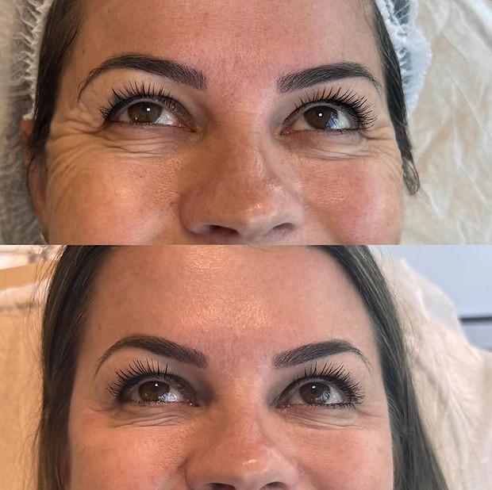
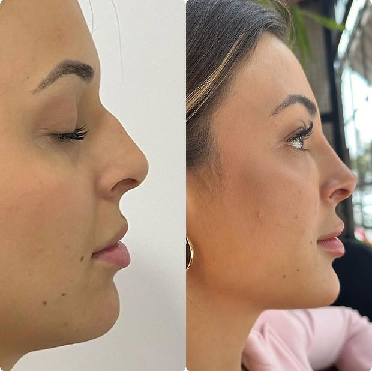
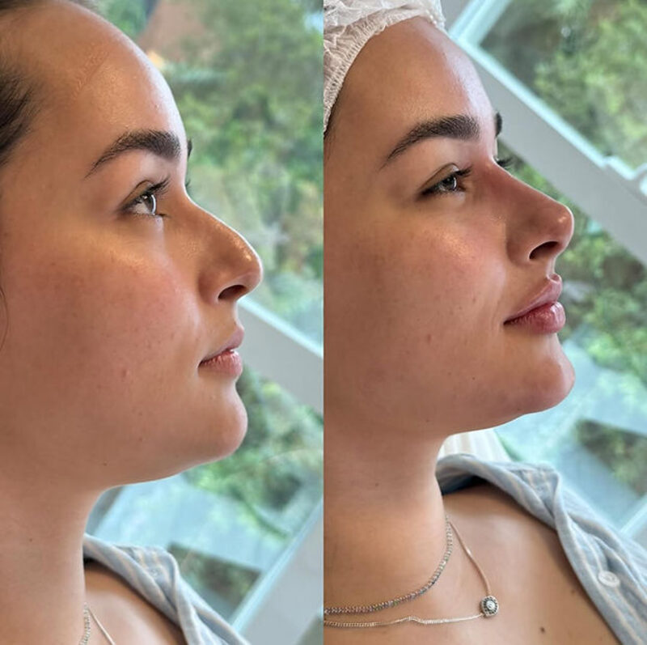
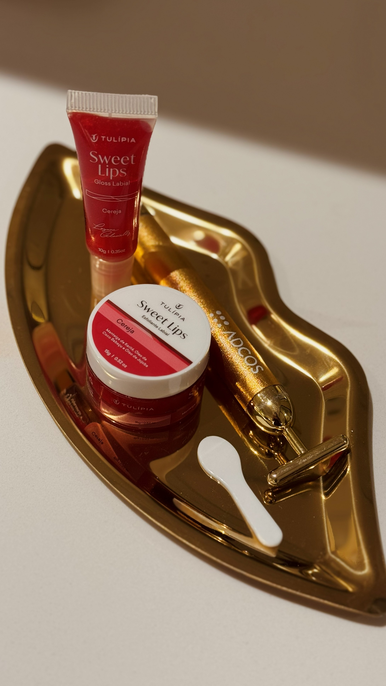
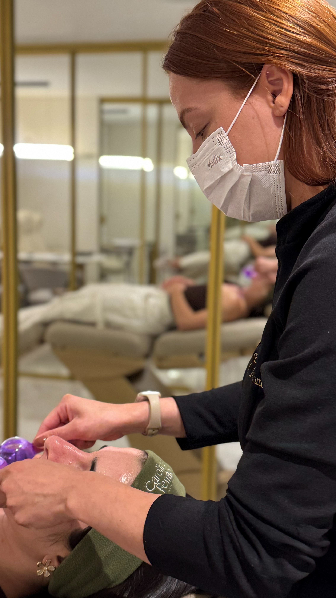
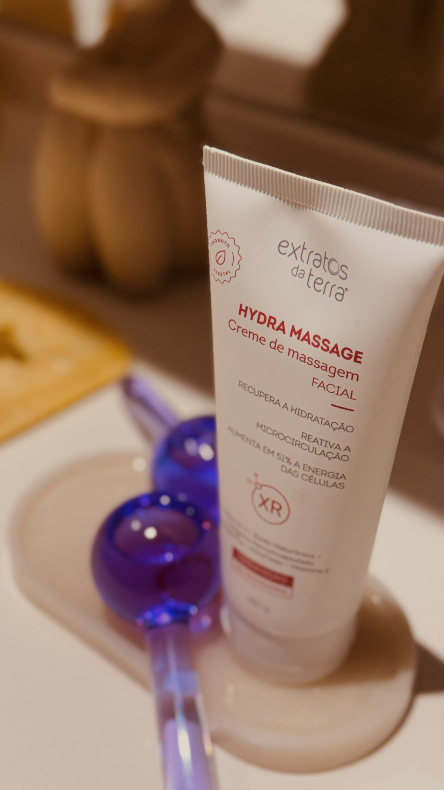

Tratamentos especializados
Todos os procedimentos são realizados por especialistas com protocolos personalizados para cada paciente.

Tratamento para suavizar linhas de expressão dinâmicas testa, entrecenho, pés de galinha. Técnica de precisão milimétrica que garante naturalidade e expressividade preservada.

Volumização, definição e hidratação dos lábios com ácido hialurônico. Protocolo especializado para lábios naturais, simétricos e proporcionais ao rosto de cada paciente.

Harmonização do perfil facial com preenchedores, corrigindo e equilibrando mento, mandíbula e terço médio. Resultado: perfil mais definido, elegante e proporcional.

Remodelação não cirúrgica do nariz com ácido hialurônico. Corrige imperfeições, refina o dorso e harmoniza o nariz com os demais traços do rosto sem cirurgia, sem cicatriz.

Estimulação da produção natural de colágeno para firmeza, elasticidade e rejuvenescimento progressivo. Resultado gradual e duradouro, sem volume imediato aparente.

Protocolo de limpeza profunda com extração, esfoliação e hidratação intensiva. Desobstrui os poros, remove células mortas e renova o viço da pele — indicado para todos os fototipos.

Lifting não cirúrgico com fios absorvíveis que promovem sustentação, estímulo de colágeno e reposicionamento dos tecidos. Efeito lifting imediato e melhora progressiva da firmeza.
Tratamento para renovação celular, redução de cicatrizes, poros dilatados e melasma. Estimula a produção de colágeno e elastina para uma pele mais uniforme, firme e luminosa.
Dissolução de gordura localizada na região submentoniana com enzimas lipolíticas. Resultado: pescoço e linha da mandíbula mais definidos, sem cirurgia.

Procedimento para volumizar, contornar e harmonizar os glúteos com preenchedores biocompatíveis. Resultado natural, proporcional e sem cirurgia.

Planejamento integrado de múltiplos procedimentos para um resultado de transformação completa. Inclui análise facial detalhada, combinação estratégica de técnicas e acompanhamento contínuo.

Protocolo exclusivo de hidratação e brilho labial com ácido hialurônico de alta viscosidade. Lábios mais macios, com volume sutil e aparência naturalmente glossy — sem exageros, sem edema expressivo.